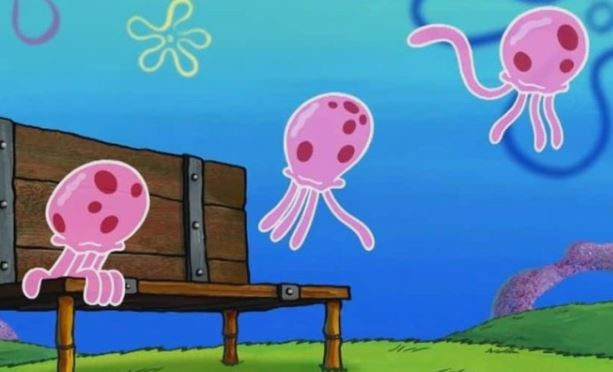

JellyFish
Characteristics
Sea nettle jellyfish
Moon jellyfish
Gold jellyfish
In the media
In the media
매체 속 해파리

'스폰지밥' 속 해파리
바닷속에 사는 스폰지밥 세계관에서는 벌이나 잠자리 같은 곤충들이 해파리로 비유되어 나타난다.
'쿠키런' 프릴해파리맛 쿠키
게임 '쿠키런'에 등장하는 캐릭터로 해파리를 모티브로 디자인되었다.
해파리처럼 재생력도 강하다는 장점을 가진 캐릭터이다.
'포켓몬스터' 탱그릴
포켓몬스터 5세대 포켓몬이다. 해파리를 모티브로 만들어진 포켓몬이다